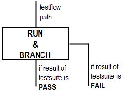

Inserting a 'Run and Branch Test Suite' node
- In this window, select one of the three option buttons according to the executed test type: Test Method, Test Function, or User Procedure.
- Type the test suite name in the Test Suite Name text box.
- Select the test to be executed in the test suite. Selecting a test differs depending on the type of test suite. For details on this, see Inserting a test suite into the testflow.
- Select the timing setup components, level setup components, and the analog set by clicking on the left of the text box. The descriptions for the setup component are displayed in separate windows.
- Select the pattern.
- Enter the context (see Context)
- Click Finish.
When a test suite is executed as part of a test flow, a pass/fail result is generated for that particular test suite. If you have inserted a "run and branch" test suite node, the pass results will be directed to the run path and the fail results to the branch.
With a "Run and Branch" test suite, you can, for example, add a bad bin to the branch and a good bin to the path.
The following figure shows a Run & Branch test suite.
